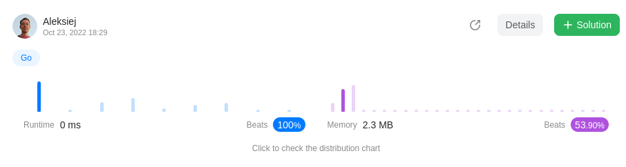

Little Linux experimentation with laptop AN515-46-R70A
I wanted to install linux on my acer laptop. But my laptop
has BIOS version 1.03. In
official site
I saw that the latest version is 1.07. There is a Windows
executable file only. Looking ahead: I tried to use
wine
in Ubuntu to run this file. But it failed. Firstly, I had to
install Windows. But which USB boot solution is chosen? On
the advice of my friend, I have chosen
Ventoy. As it turned out, the BIOS firmware should reboot in DOS
mode without the Windows environment. It was funny. After
Ventoy prepared the flash card on Ubuntu, it looked as
empty, but it was bootable. I saved the ISO Windows and
Linux files for the installations to the flash drive through
a simple copy operation. After these manipulations, I
started experimenting. I downloaded the new versions of
Endless OS, Linux Mint, Ubuntu and Manjaro. I read that
someone sells a laptop like mine with Endless OS. Therefore,
I hoped to install this operating system successfully. But
it failed. This OS is not even started. Then I successfully
started Manjaro. I really like this OS. This operating
system is very ergonomic and functional. But I saw it not
worked with my Wi-Fi device. I connected to LAN and did not
see the problem in time. There are many options for choosing
a Linux kernel in Manjaro. I have chosen version 6.0.0, but
Wi-Fi didn't work yet. Linux Mint has the similar problem.
Besides, the web camera didn't work either. I decided to
stop on Ubuntu. Because, the Wi-Fi worked well.
Conclusions
| Linux | Endless OS | Linux Mint | Manjaro | Ubuntu |
|---|---|---|---|---|
| ISO | eos-eos4.0-amd64-amd64.220406-204708.base.iso | linuxmint-21-cinnamon-64bit.iso | manjaro-kde-21.3.7-220816-linux515.iso | ubuntu-22.04.1-desktop-amd64.iso |
| Mediatek MT7921 WiFi | No information | Not working | Not working | Working |
| Internal web camera Quanta ACER HD User Facing | No information | Not working | Not working | Not working |
| External web camera Sunplus Innovation Aukey-PC-LM1E | No information | No information | No information | Working |
Der süße Brei
das Zitat
Es war einmal ein armes frommes Mädchen, das lebte mit seiner Mutter allein, und sie hatten nichts mehr zu essen. Da gieng das Kind hinaus in den Wald, und begegnete ihm da eine alte Frau, die wußte seinen Jammer schon und schenkte ihm ein Töpfchen, zu dem sollt es sagen „Töpfchen, koche,“ so kochte es guten süßen Hirsenbrei, und wenn es sagte „Töpfchen, steh,“ so hörte es wieder auf zu kochen. Das Mädchen brachte den Topf seiner Mutter heim, und nun waren sie ihrer Armuth und ihres Hungers ledig und aßen süßen Brei so oft sie wollten. Auf eine Zeit war das Mädchen ausgegangen, da sprach die Mutter „Töpfchen, koche,“ da kocht es, und sie ißt sich satt; nun will sie daß das Töpfchen wieder aufhören soll, aber sie weiß das Wort nicht. Also kocht es fort, und der Brei steigt über den Rand hinaus und kocht immer zu, die Küche und das ganze Haus voll, und das zweite Haus und dann die Straße, als wollts die ganze Welt satt machen, und ist die größte Noth, und kein Mensch weiß sich da zu helfen. Endlich, wie nur noch ein einziges Haus übrig ist, da kommt das Kind heim, und spricht nur „Töpfchen, steh,“ da steht es und hört auf zu kochen; und wer wieder in die Stadt wollte, der mußte sich durchessen.
Brüder Grimm
Meine Fragen:
- Warum hat das Mädchen ihr Zauberwort nicht mit ihrer Mutter geteilt?
- Warum hat das Mädchen ihren süßen Brei nicht zuerst mit allen geteilt?
- Warum hat die alte Frau nur mit dem Mädchen geteilt (nicht mit allen)?
Print FooBar Alternately
/*
#----------------------------------------------------------------------#
# #
# version 0.0.1 #
# https://leetcode.com/problems/print-foobar-alternately/submissions/ #
# #
# Aleksiej Ostrowski, 2020 #
# #
# https://aleksiej.com #
# #
#----------------------------------------------------------------------#
*/
#include <iostream>
#include <thread>
#include <mutex>
#include <condition_variable>
std::mutex m;
std::condition_variable cv;
int flag = 1;
void task1(const int n)
{
int i = 1;
for(;;) {
std::unique_lock<std::mutex> lk(m);
if (flag == 1) {
std::cout << "foo";
i++;
flag = 2;
lk.unlock();
cv.notify_all();
} else {
cv.wait(lk, []{return flag == 1;});
}
if (i > n) return;
}
}
void task2(const int n)
{
int i = 1;
for(;;) {
std::unique_lock<std::mutex> lk(m);
if (flag == 2) {
std::cout << "boo";
i++;
flag = 1;
lk.unlock();
cv.notify_all();
} else {
cv.wait(lk, []{return flag == 2;});
}
if (i > n) return;
}
}
int main()
{
flag = 1;
std::thread t1(task1, 3);
std::thread t2(task2, 3);
t1.join();
t2.join();
}
Longest Substring Without Repeating Characters
/*
#----------------------------------------------------------------------------------------------#
# #
# version 0.0.1 #
# https://leetcode.com/problems/longest-substring-without-repeating-characters/submissions/ #
# #
# Aleksiej Ostrowski, 2020 #
# #
# https://aleksiej.com #
# #
#----------------------------------------------------------------------------------------------#
*/
#include <string>
#include <iostream>
int max(const int a, const int b) {
if (a > b) return a; else return b;
}
class Solution {
public:
int lengthOfLongestSubstring(std::string s) {
auto len_s = s.length();
if (len_s <= 1) return len_s;
std::string t;
int max_len = -1;
int i = 0;
for (;;) {
auto found = t.find(s[i]);
if (found != -1) t = t.substr(found + 1);
t += s[i];
max_len = max(max_len, t.length());
std::cout << "i = " << i << " s[" << i << "] = " << s[i] << " max_len = " << max_len << " string = " << t << std::endl;
if (++i >= len_s) break;
}
return max_len;
}
};
int main() {
// std::string s = "aabac"; // 3
// std::string s = "pwwkew"; // 3
// std::string s = "bbbbb"; // 1
// std::string s = " "; // 1
std::string s = "aab"; // 2
std::cout << "input " << s << std::endl;
auto S = Solution();
std::cout << S.lengthOfLongestSubstring(s) << std::endl;
return 0;
}
Longest Common Prefix

/*
#--------------------------------#
# #
# version 0.0.1 #
# #
# Aleksiej Ostrowski, 2022 #
# #
# https://aleksiej.com #
# #
#--------------------------------#
*/
package main
import (
"fmt"
)
func longestCommonPrefix(strs []string) string {
if (len(strs) == 0) {
return ""
}
maxlen := 201
exclude := 0
for i, el := range strs {
len_el := len(el)
if (len_el == 0) {
return ""
}
if (len_el < maxlen) {
exclude = i
maxlen = len_el
}
}
min_ := maxlen
first := &strs[exclude]
for i, el := range strs {
if (i == exclude) {
continue
}
sum := 0
for j:=0; j < maxlen; j++ {
if ((*first)[j] == el[j]) {
sum += 1
} else {
break
}
}
if (sum == 0) {
return ""
}
if (sum < min_) {
min_ = sum
}
}
return (*first)[:min_]
}
func main() {
var strs = []string{"f"}
fmt.Println(longestCommonPrefix(strs))
}